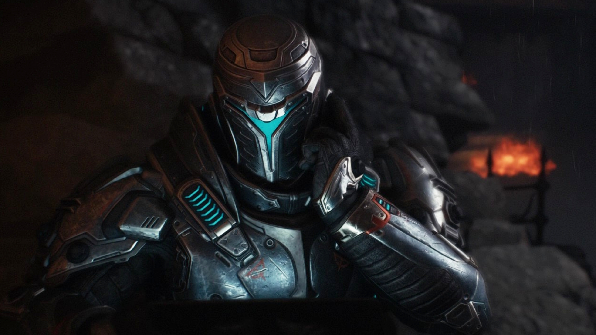
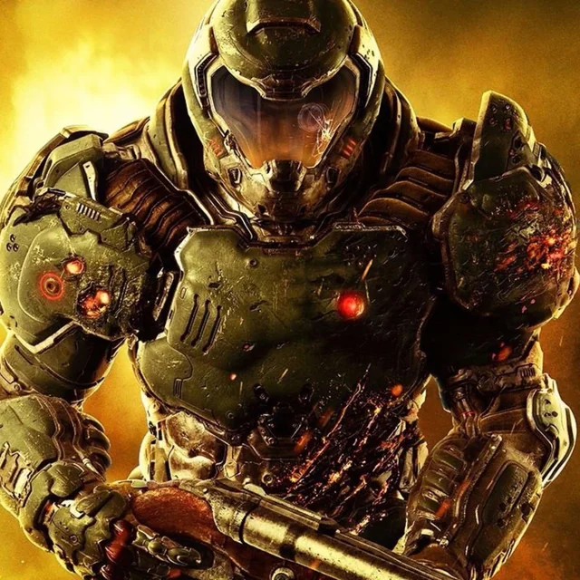
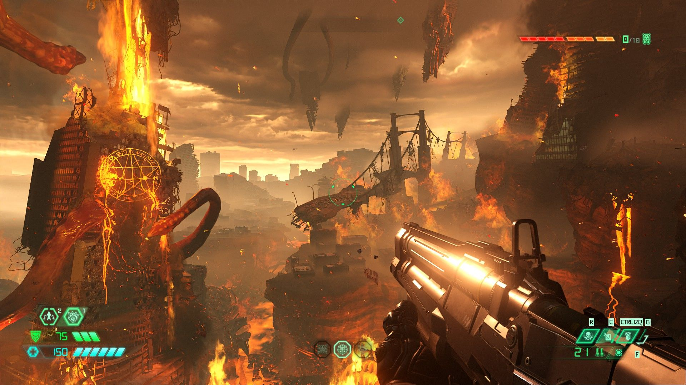
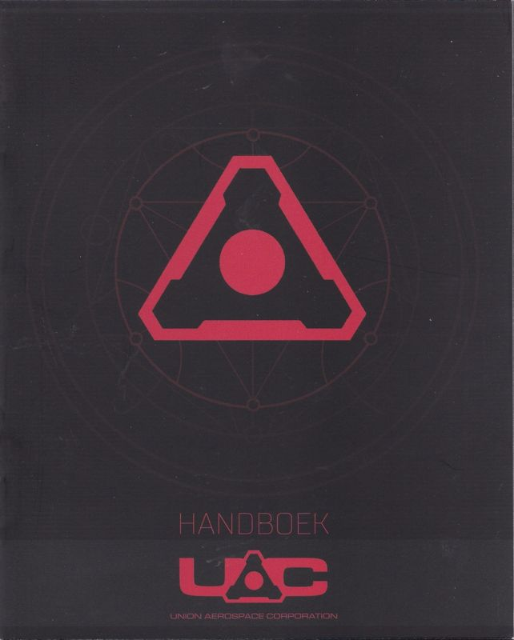
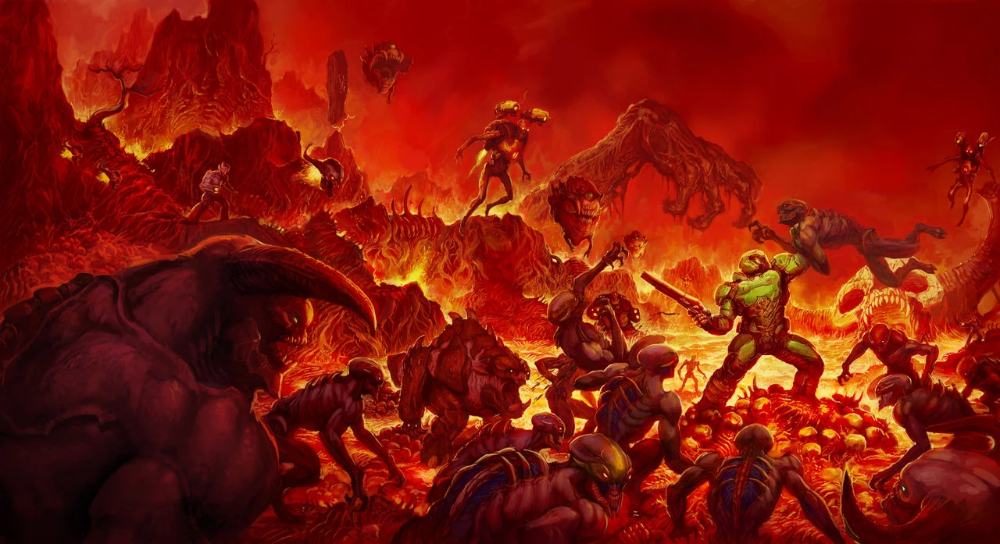
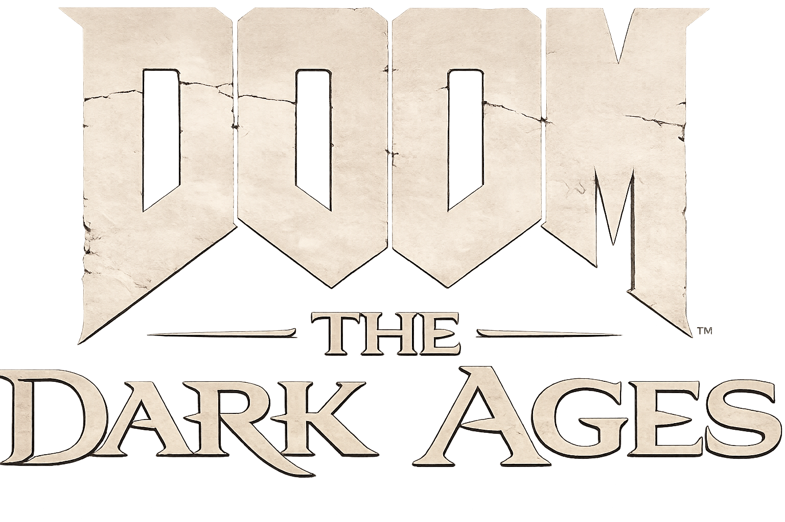

A DOOM lore
"Rip and Tear - a túlélés egyetlen szabálya"
A Sentinel korszak
A Night Sentinel civilizáció egy ősi, harcos társadalom volt, amely egy középkorias világban élt, de már fejlett energiaforrásokat is használt. Amikor a Pokol dimenziója megjelent, a birodalom egy végtelen háborúba sodródott, amely lassan felemésztette a rendjét és egységét.

A Doom Slayer felemelkedése
Egy Sentinel harcosból született meg a Doom Slayer, aki a Pokol elleni háború során elvesztette emberi korlátait. A démonok nem tudták megállítani, mert minden vereség után még dühösebbé és erősebbé vált, így végül élő legendává vált.

A Pokol háborúi
A Slayer a Pokol dimenziójába került, ahol évszázadokon át folyamatos harcot vívott a démoni seregek ellen. A Pokol próbálta megtörni, de ehelyett csak egy olyan erőt teremtett, amely később ellenük fordult.

A UAC katasztrófa
A Union Aerospace Corporation az Argent energia kutatása során megnyitotta a kapcsolatot a Pokol felé. A kísérlet katasztrófába torkollott, és a démonok betörtek a Marsra, majd a Földre is, elindítva egy globális inváziót.

A modern démoninvázió
A démoni erők elszabadultak a Földön, és az emberi civilizáció összeomlás szélére került. A Doom Slayer ismét visszatért, és brutális erővel tisztította meg a bolygót a démoni jelenléttől, minden ellenállást elpusztítva.

A DOOM: The Dark Ages eseményei
A történet a múltba vezet, ahol a Sentinel háborúk és a Pokol elleni első nagy összecsapások zajlanak. Itt formálódik ki a Doom Slayer legendája, miközben a világ a végső káosz felé sodródik.
